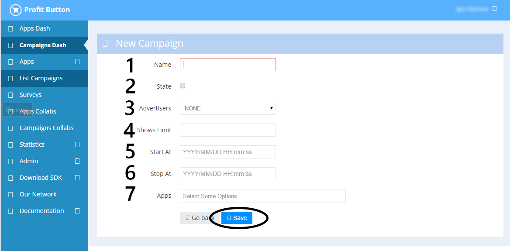

Создание кампании и креатива¶
Шаг 1 - создание кампании¶
На странице https://admin.probtn.com/adsets посредством кнопки New Campaign переходим к созданию новой кампании

Шаг 2¶
Заполняем базовые поля формы кампании, в частности
1 - имя кампании 2 - состояние (включенавыключена) 4 - общий лимит показов для кампании 5 - дата и время старта кампании в формате YYYY/MM/DD HH:mm:ss 6 - дата и время завершения кампании в формате YYYY/MM/DD HH:mm:ss 7 - аппы для кампании

Шаг 3¶
Далее переходим к автоматически созданному Placement (либо создаем новый, если таковое требуется
и сам placement

Шаг 4¶
Создаем новую группу креативов, нажав на New Targeting Указываем имя группы и необходимые таргетинги для группы, если таковые необходимы


Шаг 5¶
Создаем креатив для созданной на предыдущем шаге группе.

Первоначально указываем основные настройки кнопки, как то состояние (вкдвыкл), show what (что будет открываться при нажатии на кнопку) и open in external browser (открывать ли страницу в новой вкладке при нажатии на кнопку) и таргетинги для креатива, если таковые необходимы.

После чего сохраняем данные настройки.
Затем указываем ниже основные настройки кнопки. Описание всех параметров доступно на странице Описание параметров кнопки